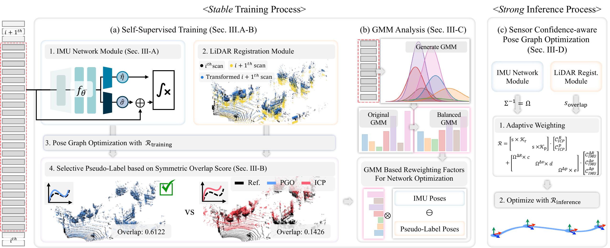
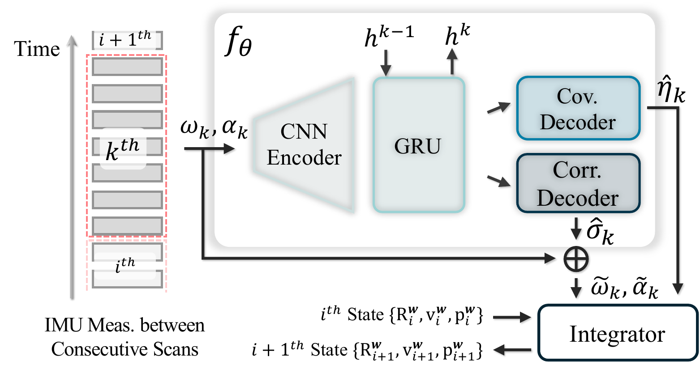
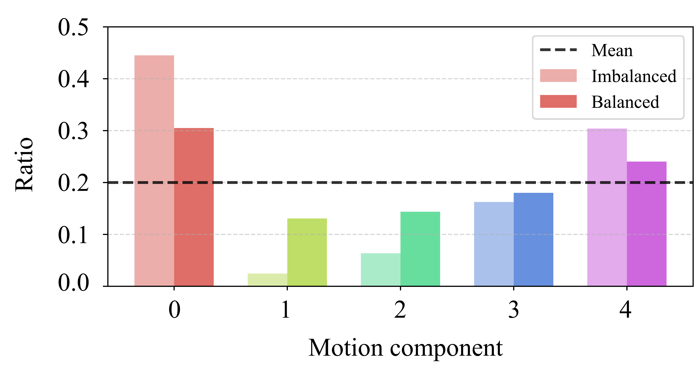
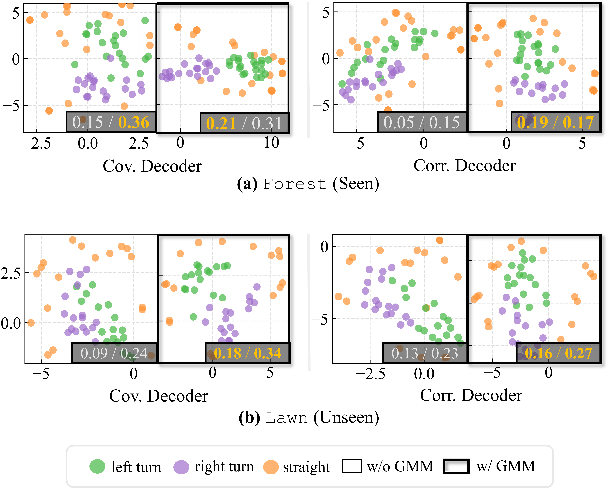
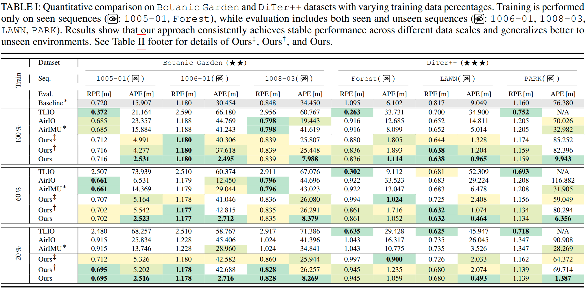
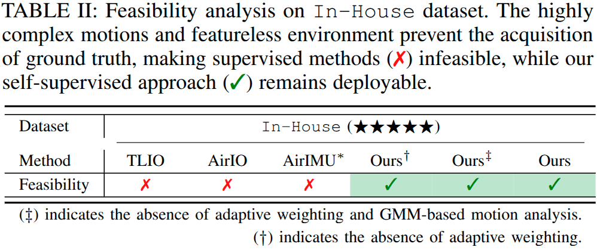

No ground truth needed. Uses LiDAR-based ICP and pose graph optimization as lightweight supervisory signals for training.
GMM-based motion analysis identifies and rebalances underrepresented motion patterns, ensuring robust learning across all dynamics.
Uncertainty-aware adaptive weighting during inference dynamically adjusts sensor confidence for reliable pose estimation.
Inertial measurement units (IMUs), which provide high-frequency linear acceleration and angular velocity measurements, serve as fundamental sensing modalities in robotic systems. Recent advances in deep neural networks have led to remarkable progress in inertial odometry. However, the heavy reliance on ground truth data during training fundamentally limits scalability and generalization to unseen and diverse environments.
We propose KISS-IMU, a novel self-supervised inertial odometry framework that eliminates ground truth dependency by leveraging simple LiDAR-based ICP registration and pose graph optimization as a supervisory signal. Our approach embodies two key principles: keeping the IMU stable through motion-aware balanced training and keeping the IMU strong through uncertainty-driven adaptive weighting during inference.
To evaluate performance across diverse motion patterns and scenarios, we conducted comprehensive experiments on various real-world platforms, including quadruped robots. Importantly, we train only the IMU network in a self-supervised manner, with LiDAR serving solely as a lightweight supervisory signal rather than requiring additional learnable processes.

Overall Framework. Our inertial odometry framework follows the Keep IMU Stable and Strong philosophy through three components: (a) Self-supervised training combines an IMU network for correction and uncertainty prediction with a LiDAR registration module for geometric constraints. PGO fuses both modalities, followed by selective pseudo-label generation using symmetric overlap scores. (b) GMM analysis stabilizes IO via motion clustering with balanced reweighting. (c) Sensor confidence-aware PGO strengthens IO through adaptive weighting during inference.

CNN-GRU Encoder. Processes raw IMU measurements to extract features and estimate learned corrections and uncertainties. An integrator combines these with the previous state to produce corrected measurements and associated uncertainty estimates.

Motion Pattern Analysis. Using GMM with Bayesian information criterion, we determine the optimal number of motion components (G=7). The distributions of normalized angular speed reveal motion characteristics for each sequence. Lower Wasserstein distances indicate better motion similarity between training and test sequences.
Motion-Aware Reweighting. Our GMM-based strategy transitions motion component weights from an imbalanced distribution to a balanced one. Components with lower frequency receive higher weights, ensuring rare but critical motion patterns (e.g., sharp turns, sudden acceleration) are adequately represented during training.


t-SNE visualization. Motion samples from GMM-determined labels (left turn, right turn, straight) in seen (Forest) and unseen (LAWN) environments. Without GMM balancing, clustering exhibits limited separation, whereas GMM-based training improves inter-class separation and intra-class compactness, indicating better generalization.
We evaluate on three diverse datasets with increasing complexity:
Complexity: 2/5
Wheeled robot, Velodyne VLP-16 LiDAR + Xsens IMU. Environmental challenges in natural settings.
Complexity: 3/5
Unitree GO2 quadruped, Ouster OS-1 LiDAR. Diverse terrains with dynamic gaits and motion complexity.
Complexity: 5/5
Unitree B2 quadruped in crater-filled planetary terrain. Extreme motion variations; ground truth infeasible.

Quantitative comparison on Botanic Garden and DiTer++ datasets with varying training data percentages (100%, 60%, 20%). Our approach consistently achieves stable performance across different data scales and generalizes better to unseen environments. Notably, our method maintains robust performance with only 20% training data.

Trajectory comparison on unseen sequences (a) 1006-01 and (b) LAWN, showing our method versus comparative approaches. Our approach closely follows the ground truth trajectory while other methods exhibit significant drift.

APE box plots on unseen sequences. Statistical significance (p-value < 10-4) confirms that each component (GMM balancing and adaptive weighting) contributes consistent performance improvements.

On our In-House dataset with crater-filled planetary terrain, traditional supervised methods (TLIO, AirIO, AirIMU) are infeasible due to the inability to acquire ground truth data. Our self-supervised approach remains fully deployable, requiring only inertial and point cloud data.

@inproceedings{choi2026kissimu,
author = {Choi, Jiwon and Kim, Hogyun and Yang, Geonmo and Lee, Juhui and Cho, Younggun},
title = {KISS-IMU: Self-supervised Inertial Odometry with Motion-balanced Learning and Uncertainty-aware Inference},
booktitle = {IEEE International Conference on Robotics and Automation (ICRA)},
year = {2026},
}